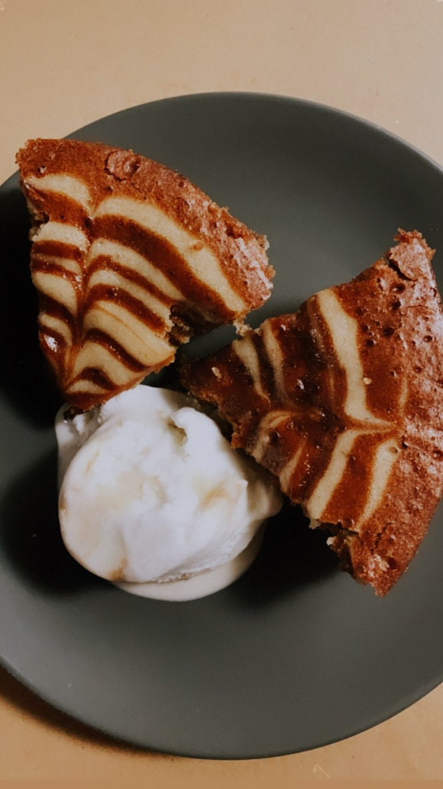
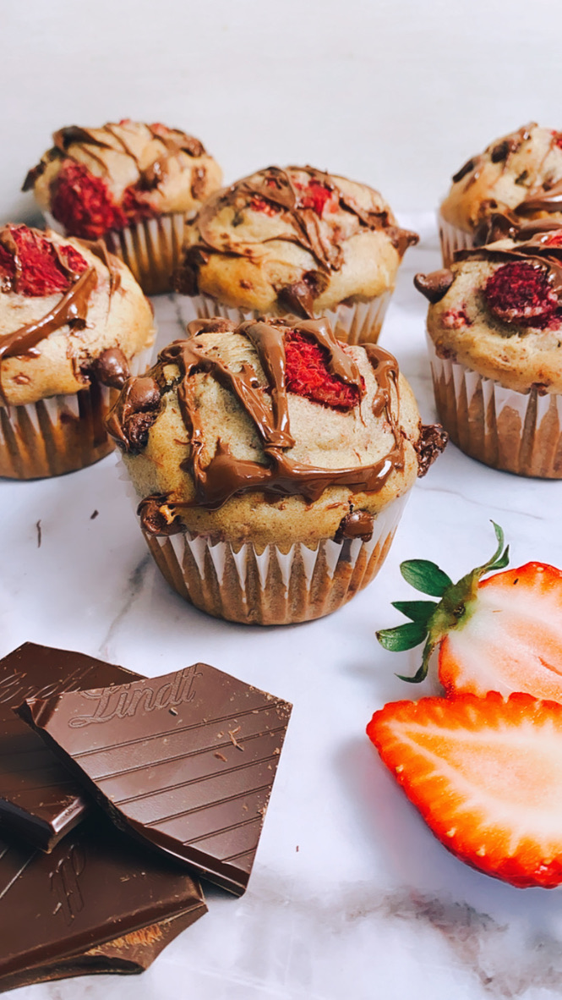
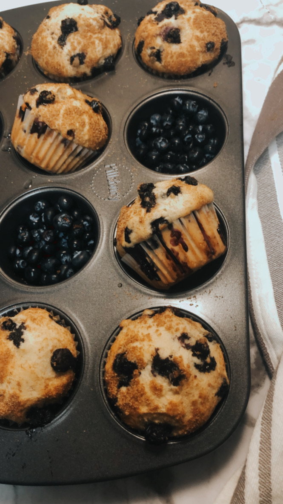
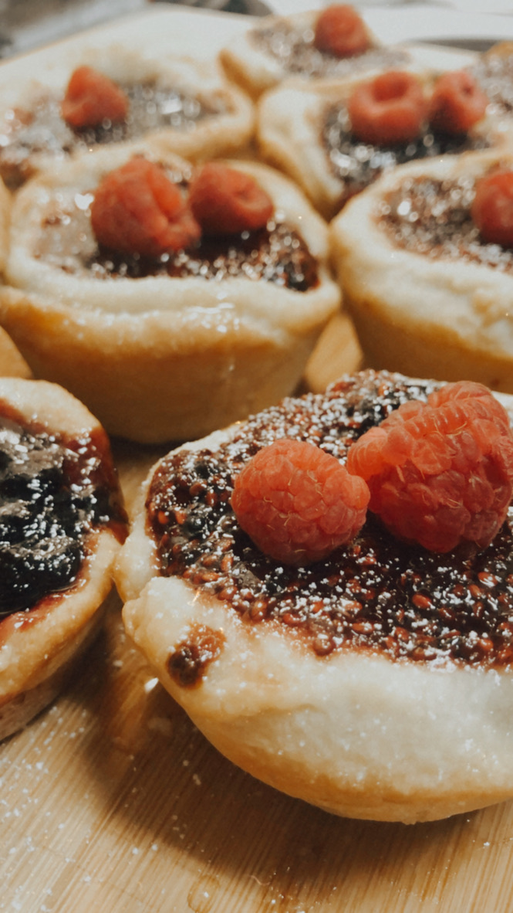
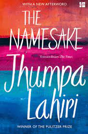

Education
University of Waterloo
Bachelors of Applied Science, 2018-2023
Minors in Statistics and Computing
Academic Standing: Excellent
Management Engineering: Management Engineering is a program focused on software and operations research. The course covers advance study of software development, data analytics, AI/ML and databases.
Project: FYDP
Product Manager Engineering Final-Year Design Project: Non-Expert Assistive System for AutoCate
The project employs natural language processing and machine learning to map layman terms to the technical terminology of the automotive industry. Once mapped, the tool uses search engines to search each technical term and retrieve relevant information from the owner’s and/or maintenance manuals.
Relevant Course
- Introduction to Machine Learning
- Advanced Machine Learning
- Algorithm and Data Structures
- Principles of Software Engineering: Projects using different methods for software design like SCRUM and Kanban
- Human Computer Interaction
- Introduction to Computer Systems and Real Time Systems
- Applied Linear Models
- Statistical Methods for Process Improvement
- Stochastic Methods and Models
- Introdcution to Optimization
- Deterministic Optimization Model and Methods
- Stochastic Methods and Decision Making
- Descion Support Systems: AI powered desicion making process
Welham Girls' School, 2011-2018
ISC, 2018 Grade: 85%
Subjects: Physics, Chemistry, Math, Economics, English
ICSE, 2016 Grade: 94.6%
Subjects: Science, Math, English, History, Political Science, Geography, Computer Science
Extra Ciriculum
- Socialy Useful Productive Work: Incharge of the school's chartible work
- Indian National Level Hocket Player
- Duke of Endinburg Gold Award Recepint
- Anjala Lal Trophy Recepient: An award for going above an beyond the call of duty to accomplish self started and assigned tasks
- Member of the editorial board of the Delphic: The schools science magazine
- Member of the editorial board of the Pirate: The schools math magazine
- Member of the Student Council for 3 consecutive years
- Sound and Lighting Incharge for schools drama, music and dance productions.
Hobbies
Baking
During the COVID-19 lockdown I had some time at hand during which I picked up Baking.
Soon it became something I looked forward to, it was definitely the ray of sunshine during the dooming lockdown.
I started baking regualry for some reason or the other, for my roomates' birthday, to celebrate a good grade, to mourn a bad exam, to satisfy my sweet tooth etc.
The following are some of my favourites:
|  |
The Zebra Cake
I baked the this cake and served it with a scoop of Vanilla ice-cream for the small party we roomates had for our roomate who graduated the summer of 2020
|
|  |
The Dark Chocolate Raspberry Muffins
I baked the muffins to use the rotting raspberries in the fridge(as I told my roomates at the time) but in actuallity it was inspired by the Great Canadian Baking Show
|
|  |
The Lemon Blueberry Muffins
I baked the muffins to for my freinds birthday
I wanted them to be a surprize so I descreetly asked her about the flavor she likes she said blueberry or lemon
I got creative and combined the two flavours.
|
|  |
Strawberry Jam Tarts
I studied at a boarding school back home in India.
Once of the sweetdish we were served was Jam Tarts. This decedant treat brings back a lot of good memories
So I baked these after a bad exam as feel good.
|
Reading
I am sure many people enjoy reading, but my connection to reading is different from other.
I was never intrigued by the fantasy land of stories, but someone told my parents that reading english books/newspapers is the best way to learn the english language
So my parents started making me read the news paper every morning before school, the scary news articles gave me nightmares so we switched to reaing stories before bedtime
I started reading books in fear and to avoid the newspaper, soon I was caught in the imaginative world of Dr. Suess, Roal Dahl and Enid Blyton.
I started loving reading, soon the fear of the newspaper vapourized and I started spending my spare time in the beautiful literally world.
 |
The Palace of Illusion
A book by Chitra Banerjee Divyakumari is the account of the indian epic Mahabharat.
The author writes the epic from the POV of the female protagnist Draupadi wife of the five Pandavs.
The book provides a unique perspective towards the epic and talks in great detail about the role of Draupadi in the epic.
The book humanizes the Pandav brothers and highlights the their mistakes.
I would recommend the book to Mahabharat enthusiasts.
|
|  |
The Namesake
A book by Jhumpa Lahri is the account of the strained relationship between a father and son.
The son of an imigrant father dislikes his father for giving him a name that is the reason he is bullied through out his life.He looses touch with his father through the years and just when he is looking to legally changes his name his father has a sudden demise
While dealing with the loss of his father and helping his greiving mother he learns about his namesake and finds out how important he was to his father.
The book is beautifully written and is an emotional roller coater and definitely a must read.
|
 |
The Secret
The book authored by Rhonda Byme is a book that talks about law of attraction
How all people attract what happens to them, and thus began the manisfestation trend
What I like the most about this book is the simplicity of the concept, that whatever we focus our energy on the universe brings that to us impartially.
The book teaches one to take responsibility for what heppens to them and learn to focus on the positive things and stop dwelling on the negative things.
|